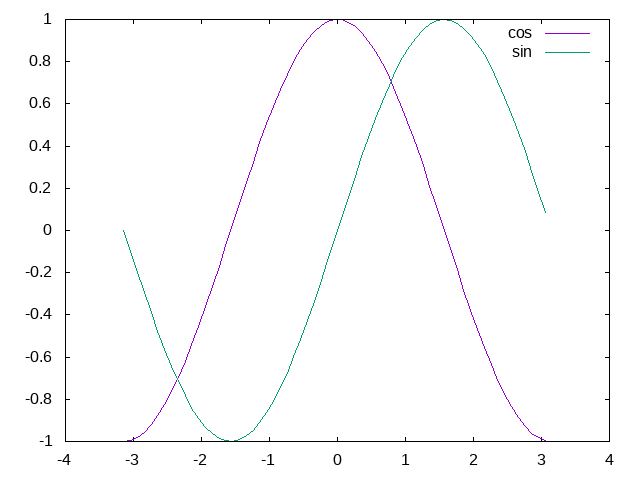

The GnuPlotScripting.jl package
This package aim is to easily generate gnuplot plots from Julia. It allows to:
- to perform direct rendering of Gnuplot plots from Julia
- to create and save Gnuplot scripts (possibly with embedded data)
- to easily export Gnuplot figuresThis is a lightweight solution that allows you to quickly visualize some data.
using GnuPlotScripting
gp = GnuPlotScript(;direct_plot=false)
X=[-pi:0.1:pi;];
Ys = sin.(X);
Yc = cos.(X);
id=register_data(gp,hcat(X,Ys,Yc))
free_form(gp,"replot '$id' u 1:3 w l t 'cos'")
free_form(gp,"replot '$id' u 1:2 w l t 'sin'")
API
Index
GnuPlotScripting.GnuPlotScriptGnuPlotScripting.free_formGnuPlotScripting.register_dataGnuPlotScripting.set_title
Documentation
GnuPlotScripting.GnuPlotScript — Typegp = GnuPlotScript(;direct_plot = true)Create a gnuplot script gp. If direct_plot is true, simultaneously plot the registered operations.
Usage example
You can perform a simple plot as follows:
gp = GnuPlotScript(;direct_plot = true)
X=[-pi:0.1:pi;];
Ys = sin.(X);
Yc = cos.(X);
id = register_data(gp,hcat(X,Ys,Yc))
free_form(gp,"replot '$id' u 1:3 w l t 'cos'")
free_form(gp,"replot '$id' u 1:2 w l t 'sin'")The plot will be created immediately.
Also see
GnuPlotScripting.free_form — Methodfree_form(gp::GnuPlotScript,gp_line::AbstractString)Write gnuplot commands. This command line is directly forwarded to Gnuplot. The only difference is that you can use replot even for the first plot. This is convenient when you chain plots, you do not have to worry if the current command is the first plot.
Usage example
using GnuPlotScripting
gp = GnuPlotScript()
free_form(gp, "replot sin(x) lw 2 t 'a trigonometric function'")GnuPlotScripting.register_data — Methodregister_data(gp::GnuPlotScript,
data::AbstractVecOrMat;
copy_data::Bool=true) -> idRegister data and return the associated data identifier. Registered data is embedded in the plot script file. The returned id is used to reference registered data.
Usage example
gp = GnuPlotScript()
M = rand(10,3)
id = register_data(gp, M)
free_form(gp,"replot $id u 1:2")
free_form(gp,"replot $id u 1:3")GnuPlotScripting.set_title — Methodset_title(gp::GnuPlotScript,title::AbstractString;
enhanced::Bool = false)Define plot title. If enhanced is true, some characters are processed in a special way. By example _ subscripts text.